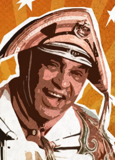

DIA DO NORDESTINO

|
|
No Dia do Nordestino, comemoramos a rica e vibrante herança dos que têm suas raízes no Nordeste do Brasil. Este dia é uma homenagem às tradições, à cultura e ao espírito resiliente dos nordestinos, conhecidos por sua hospitalidade calorosa e por contribuir significativamente para a diversidade cultural brasileira. Ao longo de nossa jornada, exploraremos a história fascinante, a culinária saborosa, as personalidades marcantes e a cultura vibrante desta região que, com seu charme único, enriquece o tecido cultural do Brasil. Junte-se a nós para celebrar e descobrir o legado inestimável do Nordeste!